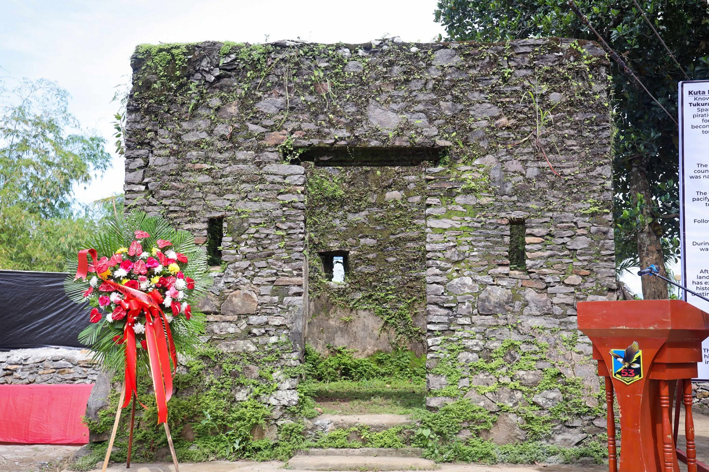

01

Barangay Militar
Old Spanish Camp
A historical destination located in Barangay Militar, Tukuran. The site offers visitors an opportunity to learn about a part of the local history and heritage of the municipality.